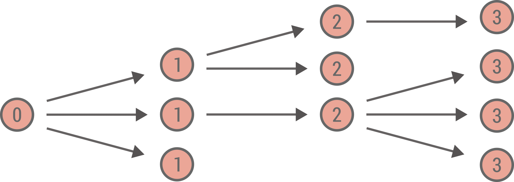

Branching process#
One way to understand and visualize a branching process is as a growing tree. The process starts at at time (or generation) \(t = 0\) with \(n_0\) nodes. At time \(t\), the \(n_t\) parent nodes each generates independently a certain number \(k\) of descendents (child nodes) according to some offspring distribution \(q_k\). These \(n_{t+1}\) child nodes become the new parent nodes at generation \(t+1\) and the process goes on forever, or until there are no more descendents at the next generation (which corresponds to an extinction event). Below is illustrated an example of a branching process with each node labeled by its generation.

This growing tree could model various situation: reproduction of bacteria, the spread of surnames, or more closely related to the main subject of this tutorial—the spread of an infectious disease in a population.
Some questions of interest are:
What is the number of nodes at time \(t\)?
What is the cumulative number of nodes at time \(t\)?
What is the probability of extinction given some initial conditions?
Of course, to answer these questions, we will use probability generating functions.
Number of nodes at a given generation#
Let us define \(p_{n_t}\) the probability to have \(n_t\) nodes at time \(t\) and its PGF \(G_t(x) = \sum_{n_t = 0}^\infty p_{n_t} x^{n_t}\). Let us also define \(Q(x) = \sum_{k = 0}^\infty q_k x^k\) the PGF of the offspring distribution. Assuming we have \(n_t\) nodes, each of them will produce independently some number of descendents, so the PGF for the sum of these descendent is simply \(Q(x)^{n_t}\) by the properties of PGF. Since \(n_t\) is also a random variable, we have that
By recursion, we have that
where \(Q^t(x) \equiv \underbrace{Q \circ Q \circ \cdots Q}_{t \text{ times}}\) is the \(t\)-composition of \(Q\) with itself and \(G_0(x)\) represents the initial conditions.
For instance, let us consider a Poisson distribution \(q_k = \lambda^k e^{-\lambda} / k!\) with PGF \(Q(x) = e^{\lambda (x - 1)}\) with \(\lambda = 2\), and let us assume initially there were 5 nodes, i.e., \(G_0(x) = x^{5}\). Below we compute and illustrate the distribution for the number of nodes at certain generations.
import numpy as np
import matplotlib.pyplot as plt
plt.style.use(['ggplot', 'seaborn-talk'])
Q = lambda x: np.exp(2*(x-1))
G0 = lambda x: x**5
N = 200
n = np.arange(N)
c = np.exp(2*np.pi*1j*n/N)
tset = {1,2,3,4}
x = c.copy()
for t in range(max(tset)+1):
if t in tset:
pn = abs(np.fft.fft(G0(x))/N)
plt.plot(n,pn, label=fr"$t = {t}$")
x = Q(x)
plt.legend()
plt.ylabel('Probability')
plt.xlabel('Number of nodes')
plt.show()
At each generation, the mean of the distribution increases by a factor \(\lambda = 2\) and the distribution gets broader due to the stochasticity.
Cumulative number of nodes#
Sometimes, we care more about the total size of the tree; for an epidemic process, it would be the total size of the outbreak. To characterize \(m_t\), the cumulative number of node at time \(t\), we need to consider the joint distribution \(p_{n_t,m_t}\) with bivariate PGF
The PGF \(G_t(x,y)\) follows a very similar update pattern as \(G_t(x)\). In fact, if we take any node at generation \(t\), the number of descendent and the cumulative number of node it produces is the same, therefore, its PGF is \(Q(xy)\). So the PGF for the sum of descendent and the cumulative number of nodes produced at generation \(t\) is \(Q(xy)^{n_t}\). Therefore, we have
Now we could extract the joint distribution \(p_{n_t,m_t}\) from this bivariate PGF, but if we only care about the cumulative number of node, we can marginalize on \(n_t\) by replacing \(x \mapsto 1\) in the previous equation. Indeed, replacing a variable by 1 in a PGF is equivalent to marginalize over the underlying quantity it represents (here \(n_t\)). Similarly, if we substitute \(y \mapsto 1\) in the equation for \(G_{t+1}(x,y)\), we recover the previous recursion for \(G_{t+1}(x)\), since we marginalize over \(m_t\).
Note
The initial conditions are now specified by the PGF \(G_0(x,y)\). With 5 nodes at \(t = 0\), this implies \(G_0(x,y) = x^5y^5\).
Q = lambda x: np.exp(2*(x-1))
G0 = lambda x,y: x**5*y**5
N = 400
n = np.arange(N)
c = np.exp(2*np.pi*1j*n/N)
tset = {1,2,3,4}
y = c.copy()
x = np.ones_like(c)
for t in range(max(tset)+1):
if t in tset:
pn = abs(np.fft.fft(G0(x,y))/N)
plt.plot(n,pn, label=fr"$t = {t}$")
x = Q(x*y)
y = y
plt.legend()
plt.ylabel('Probability')
plt.xlabel('Number of nodes')
plt.show()
Probability of extinction#
Given some initial conditions specified by \(G_0(x)\) and an offspring PGF \(Q(x)\) (or \(G_0(x,y)\) and \(Q(xy)\)), we want to know the probability that the process will go extinct. Since all nodes generate descendents independently, we can ask the simpler question: What is the probability \(u\) that a node has a finite number of descendents. Assuming this is the case, since all descendents also generate child nodes independently, it must be that all descendent also have a finite number of descendent, with probability \(u\). Since the number of descendent is given by the distribution \(q_k\),
One can see that \(u = 1\) is always a solution of this self-consistent equation, but sometime there is another solution \(u < 1\). To find this solution, one can just start with some initial value \(u < 1\) and iterate the equation. The probability of extinction is then simply the probability that all initial nodes have a finite number of descendent, i.e., \(G_0(u)\), which is also smaller than 1.
Below, we solve for the probability of extinction using different values of \(\lambda\) for the Poisson distribution. The probability of extinction is smaller than one when \(\lambda > 1\), so when on average, a nodes generates more than one descendent.
Q = lambda l,x: np.exp(l*(x-1)) #l -> lambda
G0 = lambda x: x**5
llist = np.linspace(0.5,1.5,1000)
usol = []
Pext = []
for l in reversed(llist):
u1 = usol[-1].copy() if usol else 0.5
u2 = Q(l,u1)
while abs(u2-u1) > 10**(-5):
u1 = u2.copy()
u2 = Q(l,u1)
usol.append(u2)
Pext.append(G0(u2))
Pext = list(reversed(Pext))
plt.plot(llist,Pext)
plt.vlines(1,0,1,ls='--',color='grey')
plt.xlabel(r"$\lambda$")
plt.ylabel(r"Probability of extinction")
plt.show()
Tip
When solving this type of self-consistent equation and scanning a paramater (here \(\lambda\)) it is useful to reuse the result from the previous value of \(\lambda\) to solve for the next one (it saves a lot of computation). Here, it is better to start at the end (large \(\lambda\)) to avoid numerical issues—one is invited to try it the other way around and see what happens.